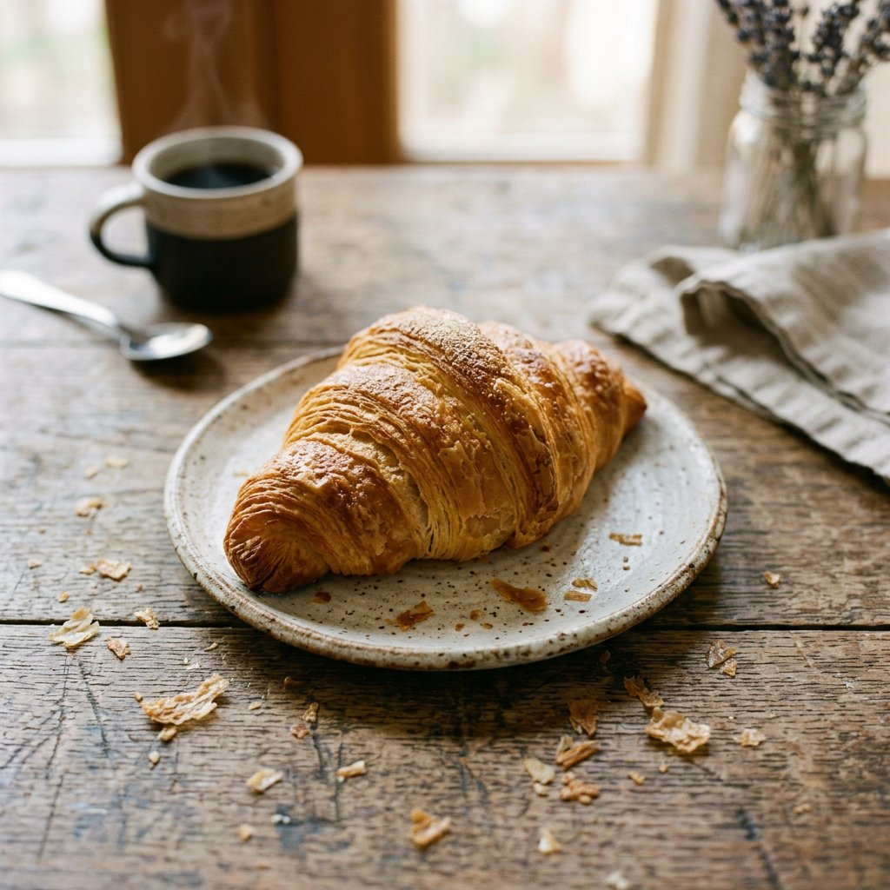
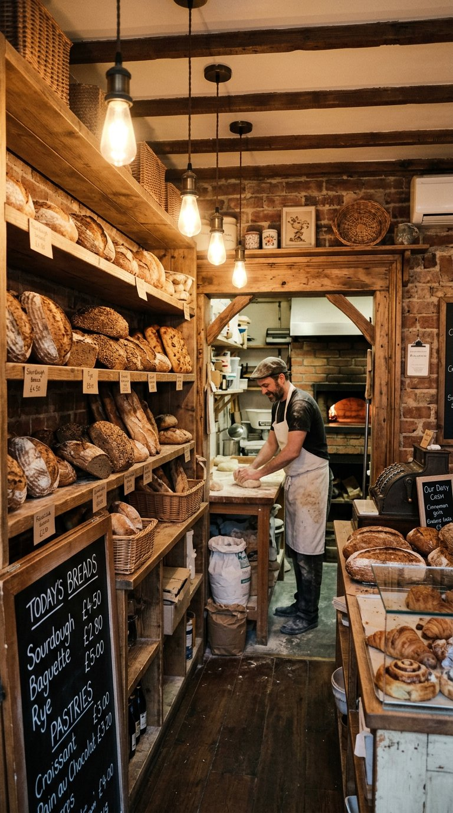

Хит продаж
Круассан классический
Слоёное тесто на французском масле, печём каждые 2 часа.
Пекарня в центре Санкт-Петербурга
Печём на закваске по домашним рецептам: без добавок и консервантов. Замешиваем вечером, печём ночью — к открытию всё ещё тёплое.

«Колосок» — маленькая семейная пекарня. Мы верим, что хороший хлеб складывается из простых вещей: муки, воды, соли и времени.
Наши закваски живут в пекарне дольше, чем многие из нас здесь работают. Мы не используем ускорители и улучшители — только медленное созревание теста.
Мука, вода, соль и время. Никаких улучшителей, разрыхлителей и консервантов.
Выпечка попадает на витрину ещё тёплой. То, что не продалось за день, не лежит до завтра.
Знаем постоянных гостей по имени и помним, кто какой хлеб любит. Заходите — убедитесь.